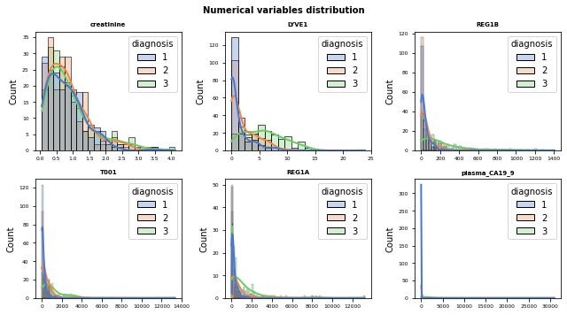
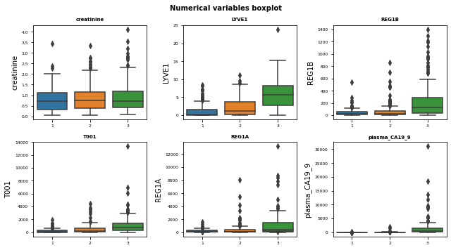
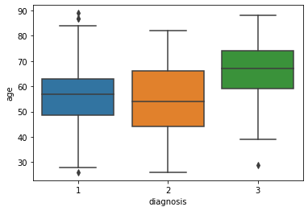
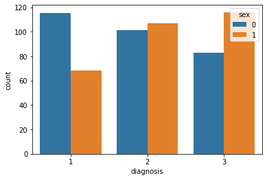
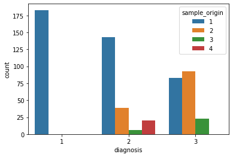
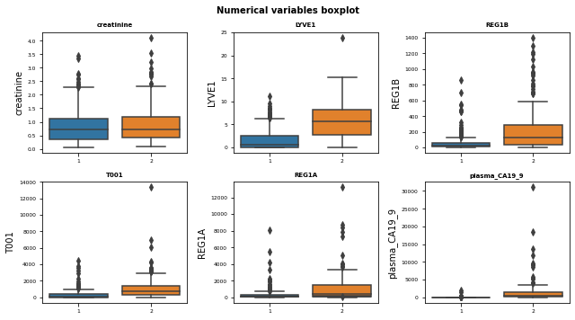

Authors: Katyna Sada, Cristina Tobías and Angélica Santos
Date: March 2021
1. Pancreatic Cancer
Pancreatic ductal adenocarcinoma (PDAC) is a highly fatal disease with a 5-year survival rate of approximtely 10% in the USA, and it is becoming an increasingly common cause of cancer mortality.
However, with an early detection the odds of surviving are much better. Unfortunately, many cases of pacreatic cancer show no symptoms until the cancer has spread throughout the body.
New strategies for screening high-risk patients to detect pancreatic tumours at early stages are needed to make a clinically significant impact.
2. Objective
Validate a biomarker panel for earlier detection of PDAC in urine.
3. Dataset
The dataset evaluates 590 patients, of which, 183 are healthy individuals, 208 have a benign pancreatic tumor and the rest have pancreatic cancer in different stages.
The data has been obtained by performing 2 different studies (cohort 1 and cohort 2). In the first study, the biomarkers analysed were creatinine, LYVE1, REG1B, TFF1 and REG1A, whilst in the second, the last biomarker was not analysed.
Other parameters that have been taken into account, besides the biomarkers, are the sex and age of the patients, the origin of the sample and, for the patients with a benign tumor, the symptoms.
3.1 Loading libraries
Code
# Library importimport numpy as npimport pandas as pdfrom sklearn.model_selection import train_test_splitimport matplotlib.pyplot as pltfrom matplotlib import styleimport matplotlib.ticker as tickerimport seaborn as sns# For creating the pipelinesfrom sklearn.impute import KNNImputerfrom sklearn.preprocessing import OneHotEncoderfrom sklearn.preprocessing import StandardScalerfrom sklearn.preprocessing import FunctionTransformerfrom sklearn.pipeline import Pipelinefrom sklearn.compose import ColumnTransformer# Algorithmsfrom sklearn.neighbors import KNeighborsClassifierfrom sklearn.tree import DecisionTreeClassifierfrom sklearn.ensemble import RandomForestClassifierfrom sklearn.ensemble import GradientBoostingClassifierfrom sklearn.ensemble import AdaBoostClassifierfrom sklearn.svm import SVCfrom sklearn.linear_model import LogisticRegression# For the metricsfrom sklearn.metrics import accuracy_scorefrom sklearn.metrics import confusion_matrix%matplotlib inline
3.2 Data
The key features are the aforementioned urinary biomarkers: creatinine, LYVE1, REG1B and TFF1. * Creatinine: a protein that is often used as an indicator of kidney function. * YVLE1: lymphatic vessel endothelial hyaluronan receptor 1, a protein that may play a role in tumor metastasis. * REG1B: a protein that may be associated with pancreas regeneration * TFF1: trefoil factor 1, which may be related to regeneration and repair of the urinary tract.
Code
data = pd.read_csv("DebernardiDataModificado.csv")data.head()
sample_id
patient_cohort
sample_origin
age
sex
diagnosis
stage
benign_sample_diagnosis
plasma_CA19_9
creatinine
LYVE1
REG1B
T001
REG1A
0
S1
Cohort1
1
33
0
1
NaN
NaN
11.7
1.83222
0.893219
52.94884
654.282174
1262.000
1
S10
Cohort1
1
81
0
1
NaN
NaN
NaN
0.97266
2.037585
94.46703
209.488250
228.407
2
S100
Cohort2
1
51
1
1
NaN
NaN
7.0
0.78039
0.145589
102.36600
461.141000
NaN
3
S101
Cohort2
1
61
1
1
NaN
NaN
8.0
0.70122
0.002805
60.57900
142.950000
NaN
4
S102
Cohort2
1
62
1
1
NaN
NaN
9.0
0.21489
0.000860
65.54000
41.088000
NaN
As it can be seen in the matrix above, the variables stage and benign sample diagnosis are exclusive to a particular diagnosis. This can be used for further studies, nonetheless, in this project, those columns are going to be removed since the absent values cannot be imputed.
Code
# There are some features which are exclusive for the type of diagnosis. # In case further studies have to be performed, that columns will be stored in these variables. stage = data.stage # Only for cancer patientsbenign_sample_diagnosis = data.benign_sample_diagnosis # Only for benign tumors#We remove the unusable columnsdata = data.drop(columns = ['sample_id','patient_cohort','stage','benign_sample_diagnosis'])
As stated before, there are several missing values for the plasma and the biomarker REG1A.
Code
# Distribution graphs for numerical variablesfig, axes = plt.subplots(nrows=2, ncols=3, figsize=(9, 5))axes = axes.flatfor i, colum inenumerate(numeric_cols): sns.histplot( data = data, x = colum, stat ="count", kde =True, palette = sns.color_palette("muted", 3), line_kws= {'linewidth': 2}, alpha =0.3, ax = axes[i-2], hue ='diagnosis' ) axes[i-2].set_title(colum, fontsize =7, fontweight ="bold") axes[i-2].tick_params(labelsize =6) axes[i-2].set_xlabel("")fig.tight_layout()plt.subplots_adjust(top =0.9)fig.suptitle('Numerical variables distribution', fontsize =10, fontweight ="bold");

The graphs show similar distributions among the diagnosis, therefore, a transformation will be applied afterwards in the models.
Code
# Boxplots for numerical variablesfig, axes = plt.subplots(nrows=2, ncols=3, figsize=(9, 5))axes = axes.flatcolumnas_numeric = data.select_dtypes(include=['float64', 'int']).columnsfor i, colum inenumerate(numeric_cols): sns.boxplot( data = data, y = colum, ax = axes[i-2], x ='diagnosis', ) axes[i-2].set_title(colum, fontsize =7, fontweight ="bold") axes[i-2].tick_params(labelsize =6) axes[i-2].set_xlabel("")fig.tight_layout()plt.subplots_adjust(top =0.9)fig.suptitle('Numerical variables boxplot', fontsize =10, fontweight ="bold");

Code
# Boxplot of agesns.boxplot(x="diagnosis", y="age", data=data)
<AxesSubplot:xlabel='diagnosis', ylabel='age'>

It is important to know the distribuition of all variables taken into account in the models, in this case, all the diagnosis have a similar number of men and women. The difference in age range is also not that significant, however the age range on the cancer pantients is higher.
Code
# Sex based on diagnosissns.countplot(x ='diagnosis', hue ="sex", data = data)
<AxesSubplot:xlabel='diagnosis', ylabel='count'>

Code
# Sample_origin based on diagnosissns.countplot(x ='diagnosis', hue ="sample_origin", data = data)
<AxesSubplot:xlabel='diagnosis', ylabel='count'>

This is not the case for the sample origin, since most of the healthy samples come from the first hospital and that all of the samples from the 4th hospital have a benign tumor.
There is barely correlation between the features, the diagnosis does not seem to have an effect neither.
After considering the plots, it is clear that the models will have suboptimal results when predicting 3 diagnosis. The proposed solution to this problem is to create two different types of models. The first type will try to predict all 3 diagnosis, whilst the second will only predict whether a patient is healthy or not.
5. Models with 3 outcomes
For these models we will considered three possible outcomes: * 1: Healthy controls. * 2: Patients with non-cancerous pancreatic conditions, like chronic pancreatitis. * 3: Patients with pancreatic ductal adenocarcinoma.
5.1 Division of data
Stratified sampling was used in order to guarantee the same proportion in each class than the one had in the complete data set.
Code
from sklearn.model_selection import train_test_split
As stated before, transformations ought to be applied to the data in order to analyse it. The chosen transformation has been the logarithmic transform, since this operation stretches the distribution of numerical variables.
Code
def log_transform(x):return np.log(x +1) # required for applying the logarithm to the numeric variablestransformer = FunctionTransformer(log_transform)scaler = StandardScaler()
Code
# Boxplots of data when applying the transformfig, axes = plt.subplots(nrows=2, ncols=3, figsize=(9, 5))axes = axes.flatcolumnas_numeric = data.select_dtypes(include=['float64', 'int']).columnsfor i, colum inenumerate(numeric_cols): sns.boxplot( data = data, y = (transformer.transform(data[colum])), ax = axes[i-2], x ='diagnosis', ) axes[i-2].set_title(colum, fontsize =7, fontweight ="bold") axes[i-2].tick_params(labelsize =6) axes[i-2].set_xlabel("")fig.tight_layout()plt.subplots_adjust(top =0.9)fig.suptitle('Logarithm of numerical variables boxplot', fontsize =10, fontweight ="bold");#
A more significant difference can be observed between classes when applying the log transform. Furthermore, some variables seem to be correlated in this scale.
After checking the effectiveness of the transformation, the pipeline is created. All the numerical variables will undergo the previous transformation, moreover, the categorical variables will be encoded so that the models can take them into account.
The missing values will be imputed by the means of a KNN imputer in both cases.
Code
# Numerical variablesnumeric_transformer = Pipeline( steps=[('transformer',transformer), # Log ('imputer', KNNImputer()), #Imputation for completing missing values using k-Nearest Neighbors. ('scaler', scaler)]) # Standardize features by removing the mean and scaling to unit variance# Categorical variablescategorical_transformer = Pipeline( steps=[('imputer', KNNImputer()), ('onehot', OneHotEncoder(handle_unknown='ignore'))])# Preprocessorpreprocessor = ColumnTransformer( transformers=[ ('cat', categorical_transformer, cat_cols), ('numeric', numeric_transformer, numeric_cols)], remainder='passthrough')
5.3 Predictive models
Different predictive models were first validated with the default tunning parameters.
/Users/katyna/opt/anaconda3/envs/SparseGoNew/lib/python3.8/site-packages/sklearn/neighbors/_classification.py:198: DataConversionWarning: A column-vector y was passed when a 1d array was expected. Please change the shape of y to (n_samples,), for example using ravel().
return self._fit(X, y)
/Users/katyna/opt/anaconda3/envs/SparseGoNew/lib/python3.8/site-packages/sklearn/utils/validation.py:993: DataConversionWarning: A column-vector y was passed when a 1d array was expected. Please change the shape of y to (n_samples, ), for example using ravel().
y = column_or_1d(y, warn=True)
/Users/katyna/opt/anaconda3/envs/SparseGoNew/lib/python3.8/site-packages/sklearn/pipeline.py:394: DataConversionWarning: A column-vector y was passed when a 1d array was expected. Please change the shape of y to (n_samples,), for example using ravel().
self._final_estimator.fit(Xt, y, **fit_params_last_step)
/Users/katyna/opt/anaconda3/envs/SparseGoNew/lib/python3.8/site-packages/sklearn/ensemble/_gb.py:494: DataConversionWarning: A column-vector y was passed when a 1d array was expected. Please change the shape of y to (n_samples, ), for example using ravel().
y = column_or_1d(y, warn=True)
/Users/katyna/opt/anaconda3/envs/SparseGoNew/lib/python3.8/site-packages/sklearn/utils/validation.py:993: DataConversionWarning: A column-vector y was passed when a 1d array was expected. Please change the shape of y to (n_samples, ), for example using ravel().
y = column_or_1d(y, warn=True)
from sklearn.metrics import classification_report, confusion_matrixprint('Confusion matrix for 3 diagnosis: ')print(' ')print(confusion_matrix(y_test,prediction))print(' ')print(classification_report(y_test,prediction))print(' ')print('Accuracy of the model: ', accuracy_score(y_test, prediction))
For these models we will only consider two possible outcomes: PADC or no-PADC. For this, the diagnosis data of healthy (1) and non-cancerous pancreas condition (2) will be merged.
A new exploratory analysis can be performed to assess whether this study will have a more positive result than the previous one.
The boxplots below show a more significant difference than the ones where 3 diagnosis were being evaluated. Nonetheless, it is still advisable to apply a logarithmic transform.
Code
# Boxplots for numerical variablesfig, axes = plt.subplots(nrows=2, ncols=3, figsize=(9, 5))axes = axes.flatcolumnas_numeric = new_data.select_dtypes(include=['float64', 'int']).columnsfor i, colum inenumerate(numeric_cols): sns.boxplot( data = new_data, y = colum, ax = axes[i-2], x ='diagnosis', ) axes[i-2].set_title(colum, fontsize =7, fontweight ="bold") axes[i-2].tick_params(labelsize =6) axes[i-2].set_xlabel("")fig.tight_layout()plt.subplots_adjust(top =0.9)fig.suptitle('Numerical variables boxplot', fontsize =10, fontweight ="bold");

As for the densities and correlations, this separation of the data allows a better visualization of clusters.
#Check the validation againnew_val2 = grid.predict(X_val2)print(accuracy_score(y_val2, new_val2))
0.8686868686868687
Code
#See the results in the test dataprediction = grid.predict(X_test2)from sklearn.metrics import classification_report, confusion_matrixprint(confusion_matrix(y_test2,prediction))print(classification_report(y_test2,prediction))
The tunned models show a high performance in both cases, nevertheless, due to the similarities between groups in the first case, a second analysis was performed in order to see if better predictions could be obtained.
The best model was the random forest classifier, which was built for only two classes. It uses the gini criterion, a maximum depth of 5 and 50 estimators. The accuracy obtained on the test set was 0,89.
These results show that the analysed biomarkers can accurately predict whether a patient has cancer or not.
Future lines of research can include the prediction of symptoms for benign tumors or the prediction of the stage of the cancer in the case of a positive diagnosis.